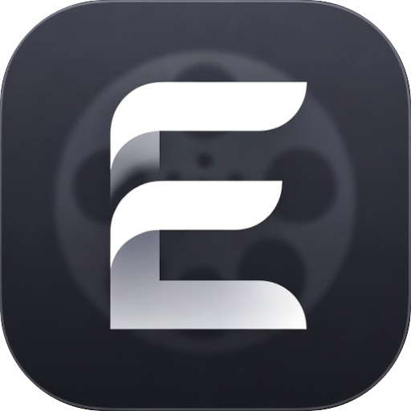

I build local AI systems you can inspect, trace, audit, compose and understand.I build local AI systems you can inspect.trace.audit.compose.understand.
Model systems, visual tools, data provenance, observability and local AI.
Independent developer with a background in visual effects. Cofounder of BC+AI.
Three layers of one design: models, workflows and agents.
Pumas Library
Mostly ready
Manage local models once.
Rust infrastructure for local AI deployment: find and download models, organize files and metadata, and share configuration across apps without duplicating model files.
Inference plugins support development and testing.
Build agents from reusable components, with a design that makes their inputs, decisions and outputs visible to people and other agents.
The composition layer in a wider design: Pumas manages models, Pantograph runs workflows, and Chrema assembles agents. Cross-project integrations remain in development.
Model development
Datasets, training pipelines and models, with active work on AI for 3D fluid physics.
Rheon Surrogate Lab
Active research
Train models to speed up fluid simulation.
Trains AI models to predict pressure for Rheon’s 3D fluid simulation. Each experiment keeps its data contracts, checkpoints, negative results and comparisons, so every claim traces back to a run.
An earlier model ran a 32³ sealed-box case about eight times faster than Rheon’s Jacobi solver path on CPU.
Work on models for more general 3D fluid physics is under way now.
An end-to-end local pipeline for building models: import and annotate data, freeze reproducible dataset releases, set up training recipes and model architectures, then inspect runs and artifacts.
The Surrogate Lab keeps its training recipes and runs in Tuldok.
Three takes on how AI systems store, retrieve and assemble memory. Each is a reference design: what works in one informs the next.

Eidetic
In development
A memory system for shaping context over time.
Eidetic’s memory system is a local-first, clip-based knowledge graph. Clips place information and relationships in time, so you can shape what a selected moment draws on and what it produces. Its Rust backend owns project state, persistence and context assembly.
Screenwriting is its first application: a desktop workspace that brings together a timeline, screenplay editor and story bible.
The coding guidance my agents and I work from. It is also a reference design: its graph-memory engine is where I test how agents find, use and change structured knowledge, so later projects can build on what worked.
Route & read
Propose & analyze
Review & apply
An observability layer on its MCP tools lets me audit how agents use that memory.
An exploratory Rust experiment for improving memory systems. It stores immutable source text, directed claims, embeddings and relationship history, then compares exact embedding retrieval, structured filtering and optional relationship reranking through Pumas.
Evaluation with real models has not been run yet.
Agent tooling
Tools for working alongside coding agents.
Whip Docs
Early prototype
See the code. Guide the work.
A visual workspace in development for understanding code structure and collaborating with coding agents. The goal is to inspect their designs and proposed changes, then guide the work through the same interface.
Today’s prototype combines a 3D file-and-symbol view with an intent journal.
Standalone tools and experiments built on the same ideas.
Book-Be-Gone
In development
Turn paper pages into editable Markdown.
An OCR platform: capture book pages with a webcam, crop and straighten the scans, and review OCR beside the originals before exporting editable Markdown.
Choose a supported local or cloud OCR provider and keep corrections in the same reading workspace.
My background is in visual effects. Today I build independent software for local models, node-based workflows, and creative work.
I often build a project to test one idea all the way through, then keep it as a reference when designing the systems that depend on it. Coding Standards is one: its graph memory is the test bed for graph memory in later projects.
Practical applications give the research something real to solve. The work stays open to inspect, with its current limits visible.
I’m a cofounder of BC+AI and founded its developer subgroup, devLab.
Languages I work in
Rust
Native infrastructure, memory and simulation: Pumas Library, Pantograph, Eidetic, Phased Memory and the Rheon solver.
Python
Data, training and research: Tuldok, the Surrogate Lab, Book-Be-Gone and the Coding Standards engine.
TypeScript and JavaScript
Interfaces and agent tooling: Chrema, Passeur, Kenoma’s browser editor and the front ends of Pantograph and Whip Docs.
C#
Game development in Godot, for Lanternwake.
Lean
Machine-checked proofs for parts of the physics in Rheon and Kenoma.